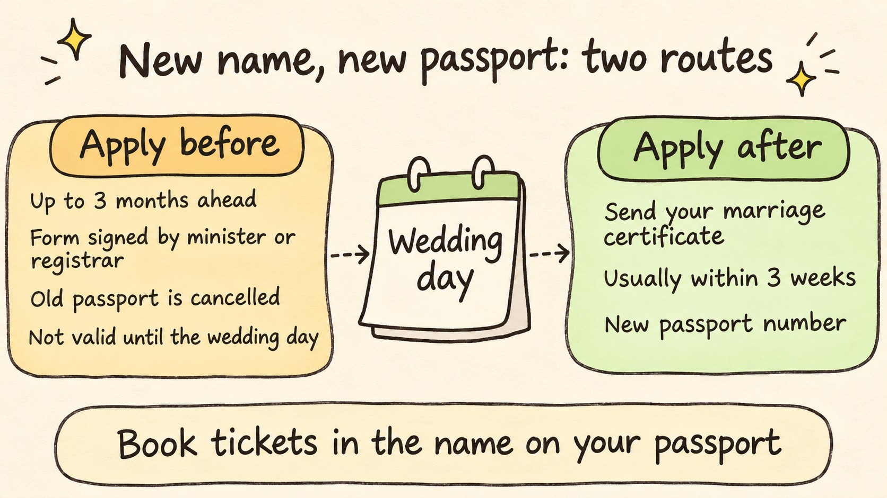

Passport Name Change After Marriage: When to Apply in the UK
Travel Document Vault
Key Takeaways
- Marrying alone changes nothing. You need a new passport only if you start using a different name.
- The name on your passport must match the name on your bookings, so the passport follows whichever name you travel in.
- After the ceremony, send your marriage or civil partnership certificate with the application.
- Applying before the ceremony gets you a post-dated passport, cancels your old one, and can complicate visas.
- With a honeymoon close to the wedding, we'd travel in your current name and apply once you're home.
Getting married changes nothing on a British passport by itself. HM Passport Office's own caseworker guidance on name changes says there is no legal basis for anyone to change their name because they've married, so the passport only needs to change when the name you use does. That leaves you a choice about when, and the timing turns out to matter more than the paperwork.
This guide covers British passports only. Other countries' passport offices set their own rules, and the principle that the passport follows the name you travel in is the part most likely to carry over.
Short on time? Our short video covers the main point in under a minute.
Marrying Alone Doesn't Mean a New Passport
GOV.UK's page on changing passport details lists marrying or forming a civil partnership while keeping your name among the changes that need no new passport at all. HMPO's guidance sets out the usual choices: keep your own surname, take your partner's, create a double-barrelled name, or take part of your partner's surname. Only the last three touch your passport.
The same GOV.UK page says you'll need a new passport to travel abroad or prove your identity once you change your name. The reason is one plain rule: the name on your passport must match the one you use when you book your travel. Plenty of people keep travelling in their old name for months after the wedding, and that's fine as long as the tickets say the same thing as the passport.
When the two don't line up, the trouble shows up at check-in rather than at the border. We've covered what happens when a ticket name and passport name don't match in a separate guide.
After the Ceremony, Your Certificate Does the Work
Applying once you're married is the simpler route. GOV.UK's marriage and civil partnership page asks you to send your marriage or civil partnership certificate when you apply for a passport in your new name, and says this includes double-barrelled names. Fill in and sign the application in the name you want printed on the passport, not the one you're replacing.
HMPO defines a double-barrelled surname as two existing surnames joined with a space or a hyphen. Two surnames run together into a single word falls outside that definition, so if that's your plan, read the caseworker guidance before you send anything.
The new passport is a different document in more ways than the name. It won't have the same number as your old one, and GOV.UK says time left on your old passport is not added to the new one. If your current passport has years left on it, that's the cost of switching now rather than at your next renewal.
Visas need a closer look. GOV.UK warns that unexpired visas in your old passport may become invalid if you change your name, and tells you to check with the embassy or consulate that issued them. For a standard renewal, the renewal page says you can send the old passport with the visa attached, get it back, and use the visa by carrying both passports. Whether that still works after a name change is the issuing country's call, so ask them first.
HMPO's service standards say you'll usually get your passport within 3 weeks, and longer if it needs more information or an interview. We cover what else can slow an application down in how long passport renewal takes. GOV.UK's advice is not to book travel until you have the new passport in your hand.
Once it arrives, the new passport has its own number and its own expiry date. Travel Document Vault keeps your documents on your phone with expiry reminders, so add the new passport and its date when it lands. Available on the App Store and Google Play.
Before the Ceremony, You Get a Post-Dated Passport
You can apply for a passport in your new name up to 3 months before the ceremony. Instead of a certificate, you send a 'passports for newly weds and civil partners' form, signed by the religious minister or registrar who will conduct the ceremony.
What comes back is post-dated. GOV.UK is direct about it: you cannot use the new passport before the ceremony, and your old passport will be cancelled. Read those two lines together and the practical effect is clear. Between sending the application and the wedding day, expect no passport you can travel on.

There's a second catch with visas. GOV.UK says some countries will not issue visas for post-dated passports, and tells you to check with that country's embassy or consulate. If your honeymoon needs a visa arranged in advance, ask that question before you apply, not after the passport arrives.
For a Honeymoon Soon After the Wedding, We'd Keep Your Current Name
Our view: if the honeymoon follows the wedding within a few weeks, book it in the name on your current passport, travel on that passport, and apply for the new name once you're home. Marrying doesn't make your current passport invalid, and a booking in your current name matches it.
That order means you're never left without a usable passport in the run-up to the wedding, and you skip the post-dated document along with the visa question it raises. It also avoids the trap GOV.UK warns about, a booking made in a new name for a passport that doesn't exist yet and won't share the old one's number.
Applying early still makes sense for some couples. If the trip is months away, needs no advance visa, and you want the new name on it, the post-dated route gets you there. Just book once the passport is in your hand.
If your surname will differ from your children's after the wedding, that's common at borders and usually easy to explain. Our guide to travelling with a child without both parents covers what to carry.
Keep your own passport and visa dates on your phone, with reminders before they expire.
Official sources
Frequently Asked Questions
Do I have to change my passport after getting married?
No. GOV.UK says you do not need a new passport if you marry or form a civil partnership and keep your name. You need one only if you change the name you use, because the name on your passport must match the name on your travel bookings.
What do I send HMPO after the wedding?
Fill in and sign the passport application in the name you want printed, and send your marriage or civil partnership certificate with it. GOV.UK says this includes double-barrelled names.
Can I get a passport in my married name before the wedding?
Yes, up to 3 months before the ceremony, with a 'passports for newly weds and civil partners' form signed by the religious minister or registrar conducting it. The new passport is post-dated, so you cannot use it before the ceremony, your old passport is cancelled, and some countries will not issue visas for a post-dated passport.
How long does a passport in a new name take?
HM Passport Office says you'll usually get your passport within 3 weeks, and longer if it needs more information or an interview. GOV.UK also says not to book travel until you have a valid passport, because the new one has a different number.
What happens to visas in my old passport?
GOV.UK says unexpired visas in your old passport may become invalid if you change your name, so check with the embassy or consulate that issued the visa before you apply. Time left on the old passport is not added to the new one either.